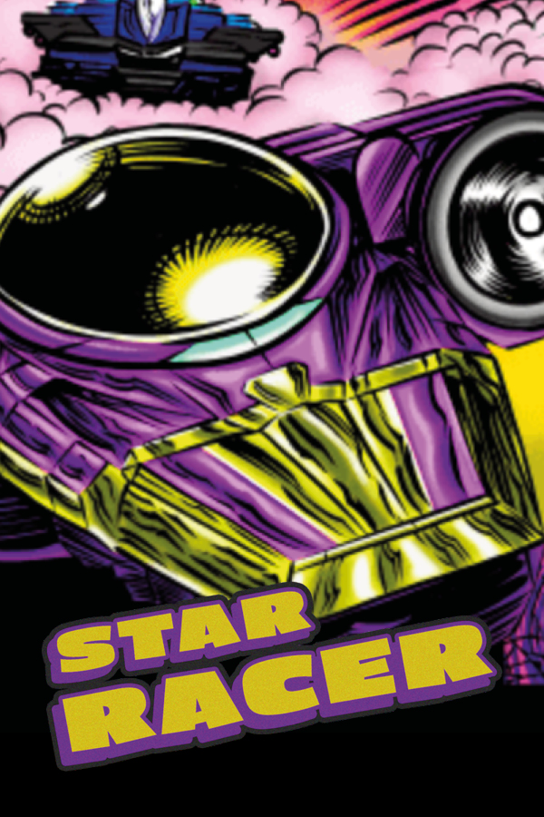

Star Racer
Every archived year-end list appearance, including placement and points earned.
About the Game
Buckle up and reach for the stars! Star Racer is a high-octane combat racer that invokes the thrill of retro classics. Blaze through the streets and defy gravity with gripping aerial assaults in order to be the first - or only - racer to cross the finish line. Engage in electrifying battles on the intergalactic racetrack where every turn is a chance to outsmart the opposition! Crossing the finish line will take strategy, skill, and a whole lot of guts. Balance your energy between boost and health, and carve an opportune path through the competition. Clean driving isn’t enough to claim victory. Smash through your rivals with circling ground attacks, or eliminate the competition in the stars with all-out aerial assaults! Your rivals won’t be the only threat on the track, as you must navigate the perilous hazards that can take you out in the blink of an eye. Drive through icy patches, sizzling lava pits, and bouncy roads that can throw any seasoned racer off their game. Danger takes the form of weaponry as well. Avoid enemy turrets targeting your every move, and drift through bombastic mines awaiting the slightest touch. One wrong move and you’ll be left in the stardust. Star Racer features a comprehensive track editor allowing you to challenge yourself or friends with custom circuits. Manipulate every single aspect of a track in order to create dynamic circuits from scratch. Craft the height and width of the roads, as well as the angles of nail-biting turns. Once the foundation is set, explore the hazards library and spill a bit of danger onto the concrete. The only limitation is your imagination.Key Features: Heart-Pounding Races: Engage in intense battles across the intergalactic racetrack. Use cunning strategies as you drift, boost, fire, and soar your place to the front of the pack! Concrete & Clouds: Dust the competition through the pavement and the skies! Bring high octane races to new heights with gravity-defying glides and aerial combat. Blaze across the pavement, soar through the stars, and leave your rivals in the stardust. Track Editor: Unleash your creativity with our dynamic track editor. Craft your own challenging circuits, share them with friends, and conquer the most daring designs. The race is in your hands! Perilous Hazards: Watch out for treacherous hazards! Navigate through sizzling lava pits and slippery ice patches that add an extra layer of challenge to every race. Only the most skilled racers will conquer the cosmic obstacles! Local Multiplayer: Grab up to three friends and dive into the multiplayer mayhem! Star Racer supports up to 4 players in local multiplayer, ensuring the party never stops. It's time to see who among your crew is the true cosmic speedster! Unique Cars: Choose from a lineup of distinct, rad vehicles. Each car comes with its own set of strengths and weaknesses, adding a strategic layer to the race. Find your perfect match and dominate the competition! Featured Tracks by Grant Kirkhope: Immerse yourself in the pulsating beats of Star Racer with featured tracks by the legendary Grant Kirkhope. The musical genius behind Banjo-Kazooie, GoldenEye 007, and Mario & Rabbids contributes his signature style to select tracks.
| Released | 2024-03-08 |
|---|---|
| Developer | Whatnot Games |
| Publisher | Whatnot Games |
| Genres | Action, Racing |
| Platforms | macOS, PC |
SingleplayerMultiplayerFull controller supportCo-opSci-fiSplit ScreenPixel GraphicsLocal MultiplayerEarly AccessRetroPvPSpace
Where to Buy
Game information provided by RAWG.
Points by Year
List History
| Year | Source | List | Placement | Points |
|---|---|---|---|---|
| 2025 | SUPERJUMP | 50 Outstanding Games Released in 2025 | Unranked | 1 |